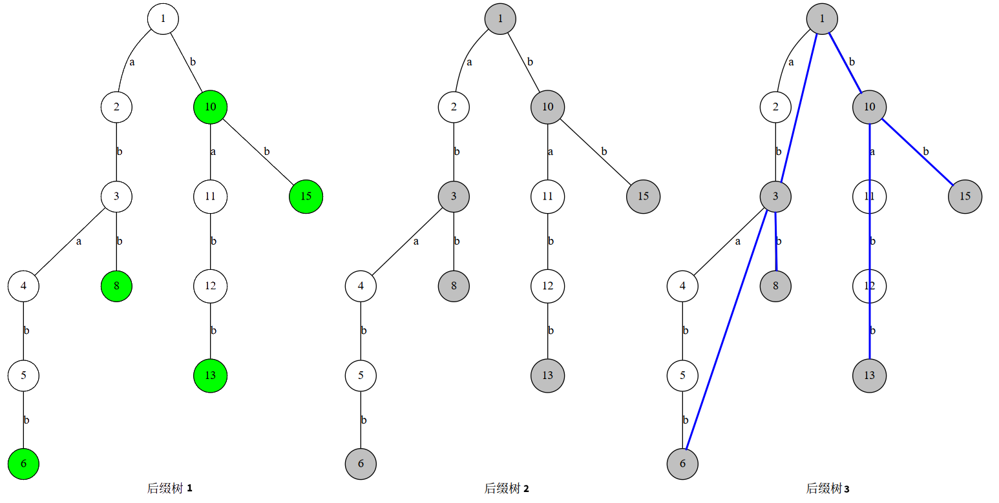
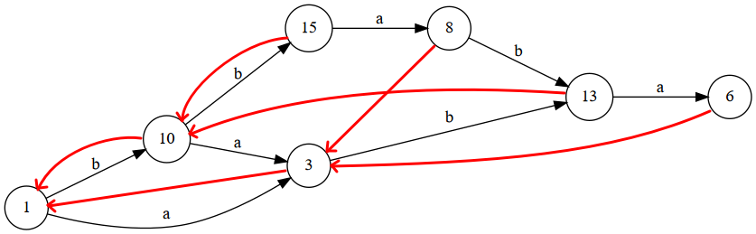
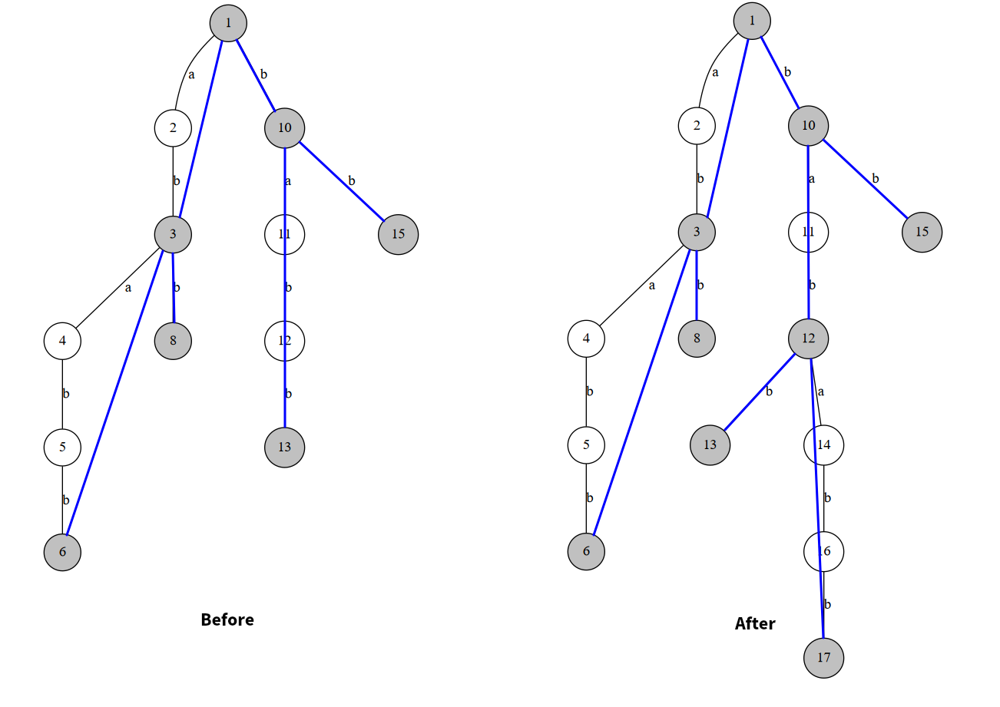

后缀自动机与后缀树
摘要
粗略地，对字符串定义 SAM：
- 是状态集合：的等价类的集合。
- 是字符集：的字符集；
- 是转移函数：对于，表示在状态的末尾添加字符到达的状态。
- （）是初始状态：。
- （）是终止状态：的后缀所在等价类的集合。
在常见的代码实现过程中，会记录额外的信息：
- ，对于，表示的最近父类对应的状态。
等价类代表一个的子串集合，使得且：
- 要么是的后缀，要么是的后缀。
- 在中的出现次数与在中的出现次数相等。
设表示（）在中出现的次数。那么我们称是的父类（包含）当：
- ，是的后缀。
- 。
也就是说等价类都包含它的父类，可以类比面向对象中的类继承。
等价类的最近父类是指它的父类中最小的那个。
后缀自动机
后缀自动机（Suffix Automaton，SAM）是一种有限状态自动机。对于一个 SAM，其转移函数是以字符集为转移条件，将当前状态转移到另一状态的函数。
这个状态分两种：合法与不合法。说白了就是存在和不存在。如果一个字符串不被 SAM 接受，那么就会转移到空指针。初始状态是根结点，也就是字符串开头。
性质
SAM 的空间复杂度与建立的时间复杂度是的。
对建立的后缀自动机包含的所有子串。因为的子串一定是其某一后缀的前缀。
不同于 AC 自动机，后缀自动机是一个 DAG。
后缀自动机中的每一个状态对应了一类子串，这一类子串长度个不相同，并且按长度排序后前一个是后一个的后缀。
等价类
我们假设这一类子串中最长的子串是，那么这一类子串满足这样的关系：的后缀在 S 中的出现的位置是相同的。这类字符串被称为等价类。
包含类
还有一种情况，就是 S 的某一子串的后缀在 S 中出现的位置比多，那么称是的包含类。为什么包含？因为出现的位置一定出现，而出现的位置不一定出现。
Fail 树
SAM 除了构建自动机还会构建一个 fail 树，fail 树中，当前状态的父结点总是它的包含类，即它的某个后缀形成的等价类。结合等价类和包含类，使得 SAM 的空间复杂度降到了线性级别。
也可以说，fail 指针指向它的最长的出现次数比它多的后缀。
模板
const int SZ=2e6+6,ALP=26;
struct SAM{
int tot,last;
int tr[SZ][ALP],len[SZ],fail[SZ];
SAM(){tot=last=1;}// 初始化
void insert(int x){
int u=++tot,p=last;// 新建结点，p 是在 fail 上跳指针用的
len[u]=len[last]+1,last=u;
while(p&&tr[p][x]==0)tr[p][x]=u,p=fail[p];// 更新 last 在 fail 树上的祖先的转移函数
// 接下来，我们求新建结点 u 的 fail 指针，同时会更新 fail 树
if(!p)fail[u]=1;// 跳到根结点的 fail
else {
int q=tr[p][x];
if(len[q]==len[p]+1)fail[u]=q;
else{
// 如果不是 0，说明结点 p 在之前就存在字符 x 的转移函数
// 那么就考虑这个转移到达的状态是否是等价类
// 如果是等价类，那么 fail 就指向 q；
// 否则就要从中分离出一个包含类，然后指向这个结点
int cq=++tot;
len[cq]=len[p]+1,fail[cq]=fail[q];
memcpy(tr[cq],tr[q],sizeof(tr[q]));
fail[u]=fail[q]=cq;
while(p&&tr[p][x]==q)tr[p][x]=cq,p=fail[p];
}
}
}
}后缀树
首先我们了解一下后缀树的概念。最基本的后缀树就是把一个串的所有后缀建一个 Trie。以 ababb 为例：

绿色的点表示接受状态的结点（即后缀的末尾）。我们将除了二度点以外的标记为关键点（因为这些点可以刻画这棵树的大致结构），如图 2。
灰色结点为关键点，并且我们认为接受状态的结点是关键点（尽管它有可能是二度点）。这个后缀树的简化后缀树相当于关键点构成的树，如图 3。
蓝色边构成的树即为简化后缀树。
理解增量构造法
后缀树与后缀自动机
一个串的 SAM 的 Fail 树是其反串的简化后缀树，反串简化后缀树的结点与 SAM 的结点一一对应。
反串后缀树上结点的深度就对应 SAM 上该状态（结点）的长度。
例如我们对 bbaba 建立后缀自动机：

可以发现，红树和上文的蓝树是一样的！
那么为什么是这样的呢？我们感性理解一下。前文所述的 SAM 可以理解为最简状态的 SAM，它将重复的状态合并。而我们把反串的后缀树取一个最简后缀树，其实就是在做类似的事情。
事实上，反串后缀树上的一条从根挂下来的路径对应原串的一个后缀，它到达的状态就是这个路径往下走遇到的第一个关键点！
比如在后缀树的图中的 aba，abab，ababb，对应原串的 aba，baba，bbaba，把他们在 SAM 上跑一遍，都会跑到结点去。即结点在 SAM 上接受的状态是 aba，baba，bbaba。
这样，对 SAM 的操作就可以与对后缀树的操作形成对应。
类似地，可以将 SAM 的转移边对应到简化后缀树上。转移边相当于在后面添加一个字符，则在反串简化后缀树上就是在开头加一个字符，然后转移到对应状态的结点。
SAM 的构造方法是一个增量构造法。我们可以通过反串简化后缀树来理解它。
例如在 bbaba 的后面添加一个字符 b。则相当于在反串开头添加一个 b，那么我们相当于把 bababb 插入到简化后缀树上，完成的效果是这样的：

但是你无法像 Trie 一样直接插入，因为你维护 SAM 的时候是没有这么多信息的，你只知道简化后缀树的信息，即关键点。因此我们尝试用 SAM 的操作来完成这个过程。
要在增量构造 SAM 的同时增量构造反串的简化后缀树，首先考虑增加一个字符带来的影响。
设表示 SAM 中所在的等价类，即所有等价类的子类。在末尾添加一个字符，相当于新建一个状态，并给增加的转移。同时，可能有的一些父类也能转移到，因此也一并加上。
接下来我们就要确认的最近父类，设其为。
- 首先，如果的父类中不存在通过转移得到的状态，说明这个是一个新的字符。那么的父类就是（）。
- 否则，可以判断，一定是由的某个父类“分裂”之后，再在其中的每个字符串末位加上得到的。分裂的原因是，在末尾加入了之后，中的某些字符串的出现次数发生了变化，而某些又保存不变。
还有一件事情。在第一步的过程中我们把以及的父类对字符建立了向的转移。而如果遇到本身存在的情况，意味着我们找到了用于构造父类的等价类。这时我们会直接进行第二步的过程。第二步的过程会给中途插入一个分裂出的父类。因此所有的，关于字符的，原本指向的转移，都得改为指向。因此我们要把的父类都做更新。
这样就完成了增量的过程。
一个具体示例
第一部分
首先，SAM 的指针指向结点。反串后缀树上结点对应路径表示的就是它接收的最长的那个状态（SAM 上的结点接受aba，baba，bbaba三个状态，而bbaba是最长的，对于反串后缀树上的路径是 ababb）。
而你在这个状态开头添加一个 b，相当于在 SAM 上通过转移边（）跳转到对应状态。而是没有的，因此我们要跳到在简化后缀树上的父节点。因为这个父节点的状态是的状态的后缀（别忘了是反串），而跳父节点就相当于是 SAM 上跳指针。
于是我们这样不断跳指针直到有一个结点的存在，在这个例子中，3 结点存在。则我们转移到，在简化后缀树中 13 包含了的状态（12 的状态即为bab，指反串）。
现在相当于，我们要把插入到简化后缀树中，然后从分叉，连出去一条链把剩下的状态补齐（即bababb-bab=abb）。
把加入到简化后缀树，则需要更新的简化后缀树上的父节点指针（对应 SAM 的 fail 指针）。
然后从连出去一条链，在简化后缀树上就是一条边（可以理解边权为 abb），然后连出这个新的结点也要更新它的简化后缀树上的父节点指针（SAM 上 fail 指针）。
第二部分
最后有一件简化后缀树考虑不完全的事情，就是对转移函数的更新（）。因为转移函数并不能直观地在反串简化后缀树上表现。但我们仍可以这么理解。
重新回到一开始。在我们不断跳 fail 寻找是否存在的时候，如果这个结点不存在，可以将它事先指向我们新建的代表（原串状态为bbabab）的结点。事实上你也应该这么做，这样才能保证转移函数的完整性。
第三部分
由于结点本来转移到（），现在我们加了一个结点，那么自然（其实结点本来就转移到，但是在之前的 SAM 中状态是被归在结点上的。现在相当于我们把这个状态分离出来）。既然是存在的，而在简化后缀树上的祖先结点状态又是它的后缀状态，因此也存在字符 b 的转移边，那么显然要一并改成。于是我们就需要在的基础上不断跳并更新字符b的转移函数。
修订记录
- 2020年7月23日 创建文章